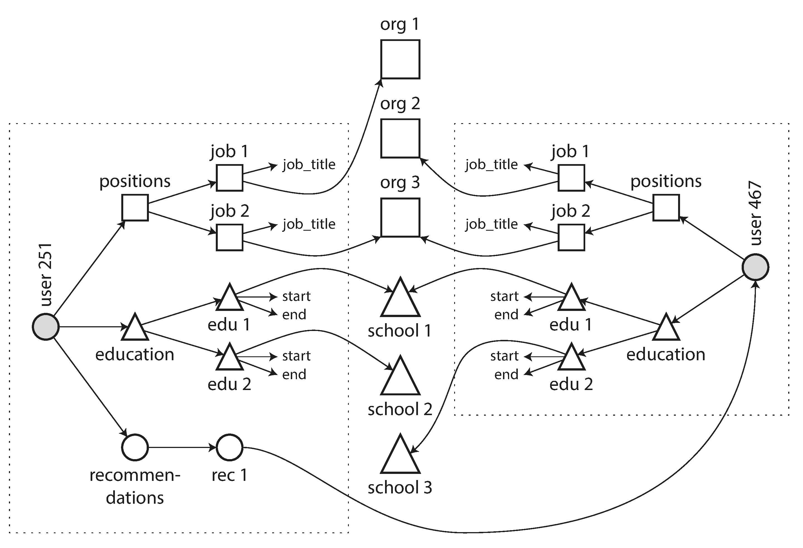

شکل 2-3. نام شرکت فقط یک string نیست، بلکه یک link به یک company entity است. Screenshot از linkedin.com.
شکل 2-4 نشان میدهد که چگونه این features جدید به relationships many-to-many نیاز دارند.
data در داخل هر مستطیل نقطهچین میتواند در یک document گروهبندی شود، اما references به organizations، schools و سایر users باید به عنوان references نشان داده شوند و هنگام querying به joins نیاز دارند.
شکل 2-4. Extending résumés با relationships many-to-many.
Relational Model Versus Document Model | 35